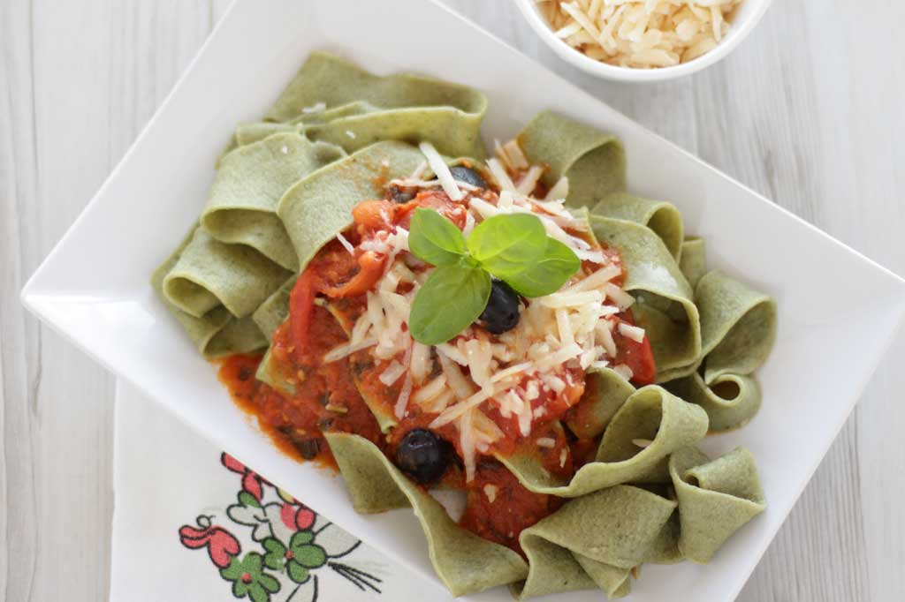
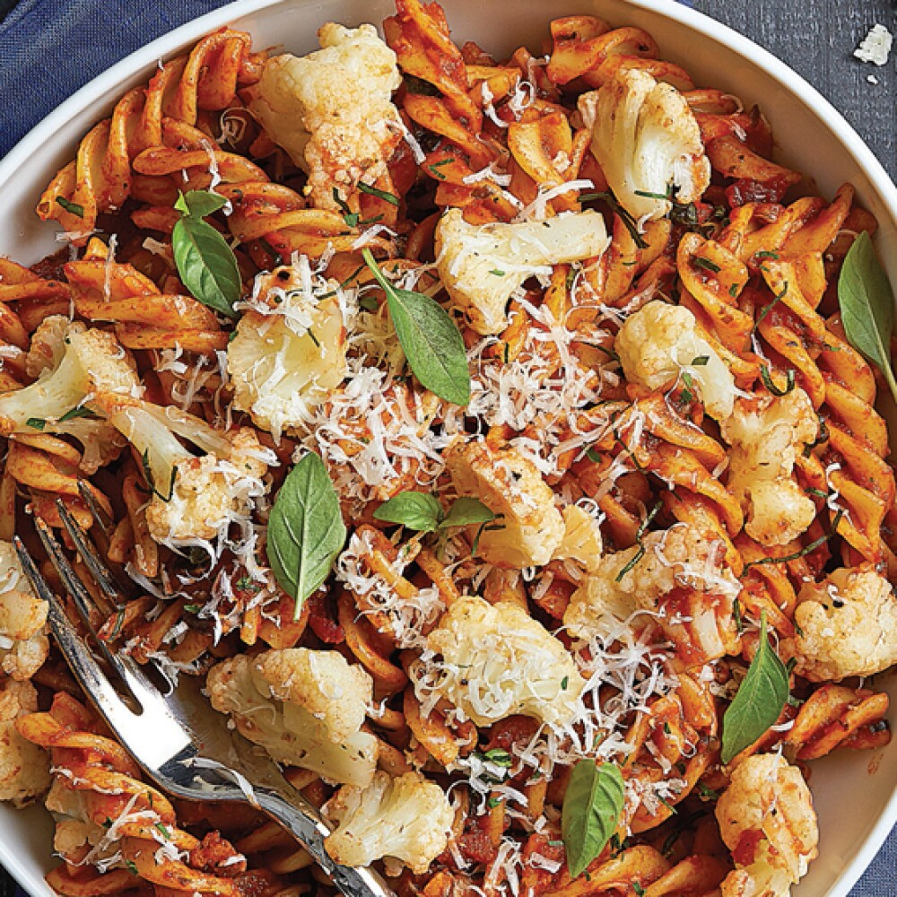
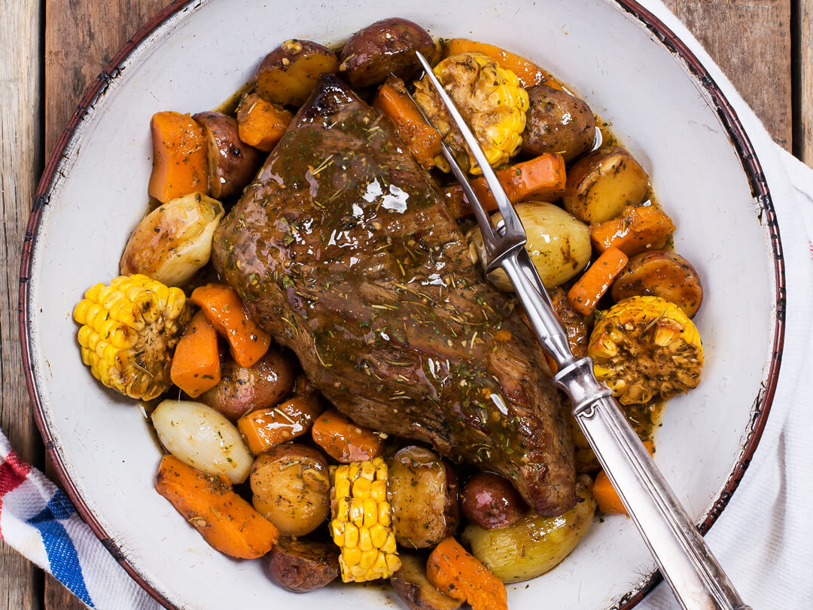

Cadena de Restaurantes Gourmet "Los Ninotti"
Bienvenidos al Restaurante Ninotti
Inicio
Multimedia
Contacto
Bienvenidos a nuestras cocinas
Nuestros mejores platos
  
Nuestra cocina de pastas
Nuestra cocina de Carne al Horno y Asada
Info
Mas publicidades relacionadas a este Restaurante